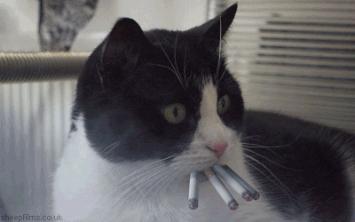
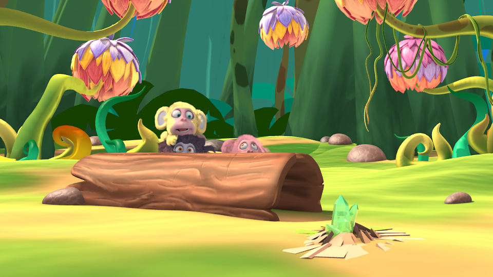
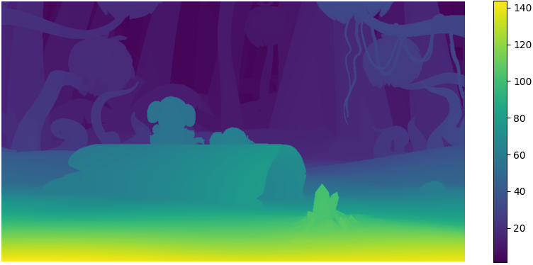
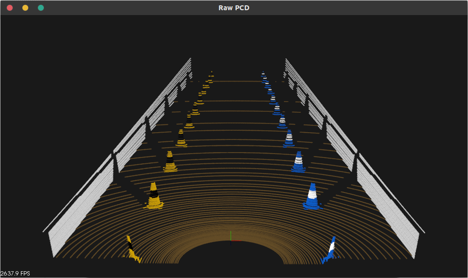

《!注意 Under Construction 危险!》
Education :
Mcomp(hons) Computer Science & Mathematics
Email addr: Jiehe1998yd@gmail.com

Final year Computer Science & Maths student, currently researching stereo matching with neural networks and tutoring first year computer science students.
Neural Net Stereo Matching Research
Oct 2020 - Present
Grade: Pending
Currently researching a real time stereo matching network for low end GPU and evaluating the effects of image inpainting method on training data generation (Watson et al. 2020).


Example image and disparity (Mayer et al. 2016)
TBRe-AI: Perception Dissertation
Oct 2019 - August 2020
Grade: 1st Class

The award-winning Team Bath Racing Electric - AI is in search of contribution to their
autonomous pipeline for their electric vehicle to embrace the summer FSUK competition 2020.
To express interest, this dissertation mainly focuses on exploring the state of the art methods to produce the Perception Pipeline.
Which is aimed to detect the landmarking features such astraffic cones and estimate distance information is be computed.